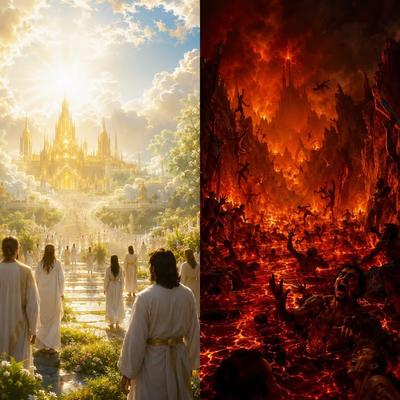

Pocas creencias han ejercido tanta influencia en la humanidad como las del cielo y el infierno. Durante siglos han sido presentadas como verdades absolutas y como destino final de todos los seres humanos. Sin embargo, cuando se examinan desde una perspectiva crítica, histórica y racional, muestran mucho más la cosmovisión de pueblos antiguos, que el conocimiento científico del que disponemos hoy.


Y es que resulta comprensible que personas de hace dos o tres mil años imaginaran un universo dividido entre un reino celestial sobre sus cabezas y un mundo infernal bajo sus pies. Aquellas sociedades desconocían la existencia de galaxias, la evolución del universo, la formación de las estrellas o la estructura del planeta. Y en ese contexto, cielo e infierno eran explicaciones intuitivas. Lo realmente sorprendente es que todavía en pleno siglo XXI, miles de millones de personas continúen creyendo literalmente en ellas.
Aunque se trata de doctrinas fundamentales del cristianismo, cuando tratas de saber cómo serían realmente esos lugares, las respuestas escasean y las preguntas se multiplican. Comencemos por el cielo. La imagen tradicional plantea numerosas interrogantes: ¿Es un lugar donde sólo se adora a «Dios» sin interrupción? Si es así, ¿cómo puede considerarse un premio y no una horrible rutina interminable?
Pero surgen dudas todavía más inquietantes: ¿Cómo puede alguien que está en el cielo disfrutar de una felicidad perfecta sabiendo que familiares, amigos o conocidos, están siendo torturados eternamente en el infierno? ¿Acaso dejan de sentir empatía? ¿Pueden comunicarse con ellos o interceder para aliviar su sufrimiento? ¿Pueden comunicarse con quienes aún vivimos para orientarnos sobre cómo debemos actuar?
Y surgen también preguntas relacionadas con el libre albedrío: ¿Existe verdadera libertad en el cielo? ¿Puede alguien decidir dejar de adorar a «Dios», abandonar ese lugar o incluso irse voluntariamente al infierno? ¿Puede cometer actos considerados pecaminosos, como blasfemar, embriagarse o fornicar? Y si pecara, ¿sería expulsado? ¿Existiría algún segundo juicio?… Pero las dudas continúan: ¿Es posible enamorarse en el cielo y formar pareja? ¿Pueden existir relaciones entre personas del mismo sexo? ¿Se puede tener alguna mascota? ¿Pueden tenerse hijos? ¿Puede alguien expresar aburrimiento, criticar a «Dios» o pedir cosas que le satisfacen, como libros, películas, deportes o internet? ¿Se puede departir con amigos disfrutando de alguna bebida favorita? ¿Se puede disfrutar de alguna playa o de cosas placenteras que hay en la Tierra? En definitiva, ¿es realmente atractivo ese supuesto premio eterno?
Pero el infierno tampoco resiste un análisis crítico, y una de sus contradicciones más evidentes, es la figura de Satanás. Si él es el enemigo de «Dios», y pecar significa ofender a «Dios», ¿por qué castigaría a quienes hicieron precisamente aquello con lo que él está de acuerdo? ¿No sería más lógico que los premiara?
Como también resulta difícil comprender la naturaleza de los supuestos delitos: ¿Por qué merecerían un castigo eterno acciones que no necesariamente perjudican a otras personas, tales como profesar otra religión, sentir atracción por alguien del mismo sexo, o simplemente no creer en ningún dios? Y si una persona llega al infierno precisamente porque pecó, ¿puede seguir pecando allá? Si continúa haciéndolo, ¿qué castigo adicional recibiría? O si ya no puede hacerlo, ¿significa que perdió el libre albedrío?
Pero desde una perspectiva jurídica y ética, las dificultades son todavía mayores: ¿Por qué nadie obtiene la libertad tras cumplir una pena proporcional? ¿Cómo puede justificarse un castigo infinito por acciones cometidas durante una vida limitada? Ningún sistema judicial moderno aceptaría semejante desproporción. Además, ¿por qué los condenados no tienen oportunidad de defenderse explicando las circunstancias que rodearon sus decisiones? ¿Por qué no existe derecho a un abogado ni a un proceso que cualquier sistema jurídico moderno consideraría mínimamente justo?
Pero aparte de todo lo anterior existe una pregunta fundamental: ¿dónde están exactamente esos lugares? Durante siglos se creyó que el cielo estaba literalmente sobre nuestras cabezas, en el mismo lugar al que según los relatos evangélicos, Jesús ascendió tras su resurrección. Sin embargo, hoy sabemos que más allá de la atmósfera lo que hay es espacio, planetas, estrellas, galaxias y agujeros negros, pero ningún reino celestial. Y del mismo modo, por mucho tiempo se pensó que el infierno se encontraba bajo la superficie terrestre. Pero la geología moderna ha demostrado que el interior del planeta está formado por corteza, manto y un núcleo compuesto principalmente por hierro y níquel a temperaturas extremadamente elevadas. Pero tampoco allí existe un reino de condenación. Ahora que tenemos GPS y otras tecnologías, ¿cómo es que no podemos determinar, aunque sea aproximadamente, dónde se encuentran el cielo y el infierno?
Ante esta dificultad, muchos creyentes modernos sostienen que cielo e infierno son «realidades espirituales» o metáforas. Sin embargo, esa interpretación tropieza con varios pasajes del Nuevo Testamento. Por ejemplo, donde Jesús habló del infierno como un lugar al que podía ir el cuerpo entero (Mateo 5:29-30; Marcos 9:43-47), donde podían destruirse cuerpo y alma (Mateo 10:28), e incluso mencionó sus puertas (Mateo 16:18). Así como también describió el cielo como un lugar con tronos, banquetes y puertas (Mateo 16:19; Mateo 19:28; Lucas 13:29; Lucas 22:29-30). Si todo esto era simbólico, ¿en qué momento dejaron de interpretarse literalmente esos textos y comenzaron a entenderse como metáforas? Pero sobre todo, ¿con qué criterio se decide qué pasajes deben leerse de forma literal y cuáles no?
Pero más allá del debate sobre su existencia, la historia muestra que ambos conceptos —cielo e infierno— han funcionado como extraordinarios mecanismos de control social. Durante siglos, el cielo se ha presentado como la recompensa para quienes obedecen las normas religiosas, mientras que el infierno actúa como una amenaza para quienes las desafían. En efecto, las organizaciones religiosas prometen felicidad eterna a los obedientes y tormento eterno a los disidentes. La historia del cristianismo ofrece numerosos ejemplos del uso del temor al infierno para controlar conciencias, fomentar conversiones, justificar confesiones obligatorias, recaudar donaciones, vender indulgencias, e imponer normas morales cuya desobediencia se presentaba como un riesgo eterno.
Y de esta forma, el miedo al castigo y la esperanza de la recompensa, se convirtieron en herramientas eficaces para reforzar la obediencia, desalentar el pensamiento crítico y consolidar la autoridad de quienes afirman conocer el camino hacia la salvación. La psicología moderna reconoce desde hace tiempo, la enorme eficacia del miedo y la recompensa como mecanismos de condicionamiento del comportamiento. No resulta extraño, por tanto, que estas doctrinas hayan perdurado durante tantos siglos.
Sin embargo, desde una perspectiva histórica, las ideas de cielo e infierno reflejan mucho mejor la imaginación religiosa de sociedades antiguas, que una descripción objetiva de la realidad. Surgieron en una época en que se desconocía prácticamente todo sobre el universo, la geología, la biología o el funcionamiento del cerebro humano. Por lo que lo verdaderamente extraordinario es que, después de siglos de avances científicos, exploración espacial, astronomía, neurociencia y pensamiento crítico, miles de millones de personas continúen aceptándolas como si fueran sitios reales.
La explicación más sencilla y más plausible es que simplemente el cielo y el infierno no existen; son solamente construcciones culturales elaboradas por seres humanos para responder a preguntas que entonces no podían contestarse de otra manera, y al mismo tiempo, para crear un poderoso sistema de recompensa y castigo destinado a controlar la conducta colectiva. Desde esta perspectiva dejan de verse como «revelaciones sobrenaturales», y pasan a entenderse como productos de la imaginación humana, propios de una época con escasos conocimientos científicos, pero eso sí, extraordinariamente útiles para influir sobre el pensamiento, las emociones y el comportamiento de millones de personas.
[Godless Freeman]
Comentarios
Comments powered by Disqus